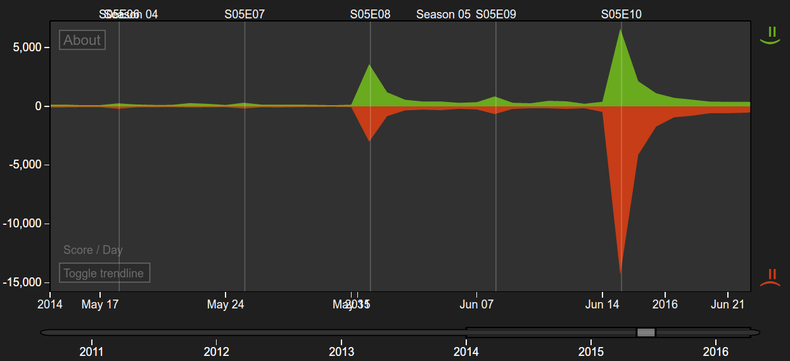
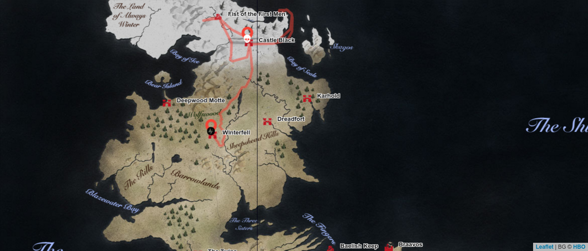

“The past is already written, the ink is dry” – so says the teaser for the sixth season of the popular TV show Game of Thrones. And until recently, that’s what we at got.show believed, too. 9 long months after we saw our favourite character Jon Snow join his father up in the GoT heaven in the season's 5 finale “Mother’s Mercy”, we have reasons to believe that he’s going to stick around on Earth with the rest of us for a little longer. You don’t think so? Well, then you know nothing, Jon Snow.
4 reasons Jon Snow is still alive
Our very own machine learning algorithm says so.
We at got.show are firm believers that artificial intelligence & machine learning can have a more beneficiary impact on humanity than embarrassing ourselves playing our own games – that’s why we created an algorithm that calculates Game of Thrones characters’ likelihood of death! Luckily, Jon is only at 11%, which is overall pretty low. You’ll be glad to know that another famous Northern bastard - Ramsay Bolton, for instance, is at over 60%! Furthermore, being Lord Commander of the Night's Watch makes him one of the safest guys in all of Westeros, since it is the title with the lowest death rate in the series. Read more about our awesome Life & Death rankings here!
He is way too popular to be killed off.
I know, I know – being popular couldn’t save a lot of our other favorite Game of Thrones characters, but with Jon it’s different. Just see what an outrage the season's 5 finale caused on Twitter with our Twitter Sentiment Analysis App – and then think about the gigantic plot twist of bringing him back to the living! How does Twitter feel about Jon Snow? See it yourself with our Game of Thrones Sentiment analysis app.
Twitter graph. How does Twitter feel about Jon Snow? See it yourself with our Game of Thrones Sentiment analysis.

Official Announcement poster for the sixth season Game of Thrones, featuring Jon Snow.
Kit Harington (Jon Snow’s actor) was on set for the sixth season of Game of Thrones!
Read about it in the Independent. And if that’s still not enough for you, what do you think about this official HBO poster?
He just can’t be dead.
I can’t even. Who’s going to care for Sam & Gilly? Who will handle the wildlings? Let me tell you one thing: If Leonardo di Caprio can drag himself through the freezing cold for weeks after fighting with a goddamn grizzly bear, why shouldn’t Kit Harington survive a minor stabbing, heh?
Still not convinced? Then you’ll be glad to hear that the season 6 premiere of Game of Thrones is going to air on the 24th of April 2016 already - soon we will know.
Follow Jon’s last latest steps here!

Follow Jon Snow’s footsteps with our Game of Thrones map!
Shortly after leading the wildlings to Castle Black to save them from the nearing White Walkers, Jon had to learn about Stannis Baratheon’s fate from Melisandre. Then the unthinkable happened. Where will we see him next? Stay tuned at got.show